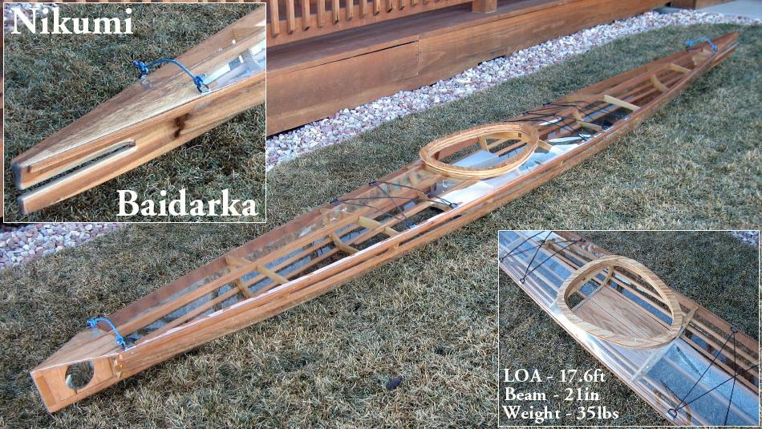

| (New) Nikumi by Tom Yost (US) | Menu Previous Page Next Page |
|

The non-folding wood frame "Nikumi" is a multi-chine Baidarka. The frame is a combination of cedar stringers and plywood cross sections and coaming. The skin is clear vinyl. The frame is finished in Watco Danish oil. The following Link displays several pages of "Nikumi" construction pics in the "Designs Menu".
Use the {BACK} key to return.
|
|